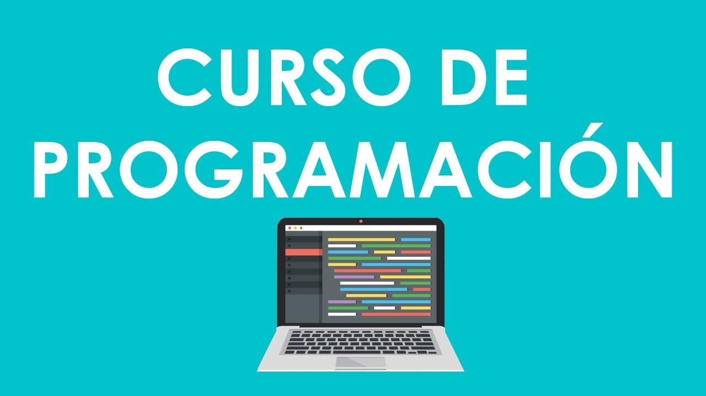
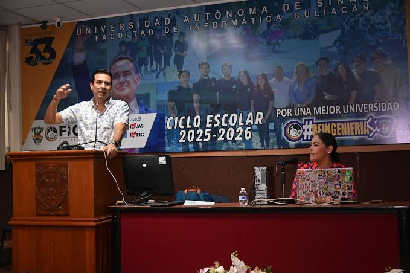
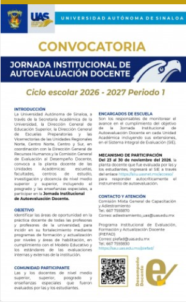
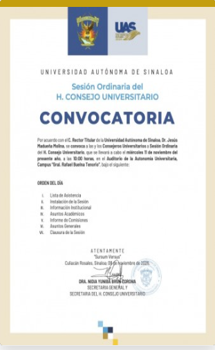
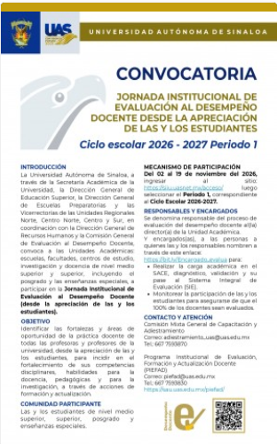
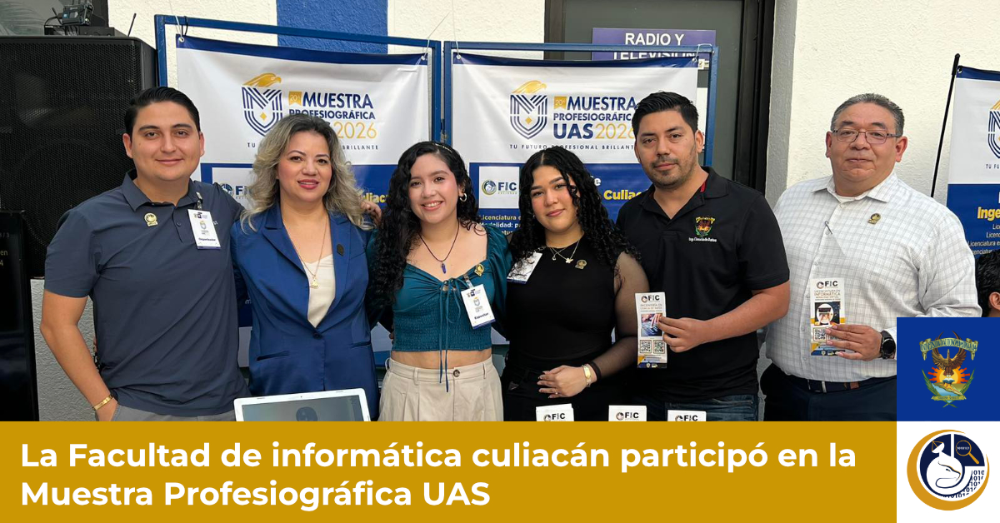
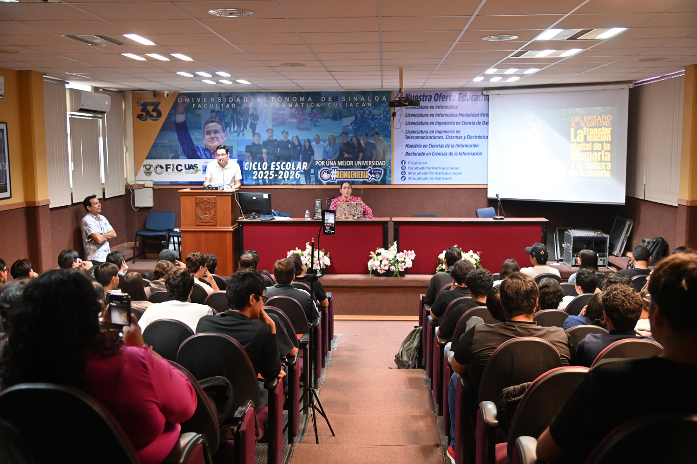

Concurso de Programación
Estudiantes de la Facultad de Informática participan en competencias de programación, demostrando sus conocimientos, habilidades y creatividad para resolver problemas.

Estudiantes de la Facultad de Informática participan en competencias de programación, demostrando sus conocimientos, habilidades y creatividad para resolver problemas.
La Facultad de Informática promueve espacios de aprendizaje para que los estudiantes conozcan nuevas herramientas y tendencias relacionadas con las tecnologías emergentes.

La Universidad Autónoma de Sinaloa fortalece la vinculación laboral de sus estudiantes mediante oportunidades de empleo, como la solicitud de personal de la empresa Coppel.

Espacio para presentar información sobre las actividades académicas y estudiantiles de la Facultad de Informática.

Participación de los estudiantes en eventos y actividades que contribuyen a su formación profesional.

Actividades realizadas por la comunidad universitaria para fomentar el aprendizaje y la convivencia.

Consulta los lineamientos, fechas y requisitos para participar en el proceso institucional del periodo vigente.

Información oficial sobre sesiones, acuerdos y participación de la comunidad universitaria de la UAS.

Participación estudiantil y docente para fortalecer la calidad académica en la Facultad de Informática Culiacán.
Registro y documentación requerida para estudiantes interesados en programas de apoyo y movilidad.

Conferencias magistrales, paneles y muestras de proyectos desarrollados por estudiantes y docentes de la Facultad de Informática Culiacán.

Jornada colaborativa donde equipos estudiantiles diseñan soluciones tecnológicas aplicando programación, bases de datos y trabajo en equipo.
Encuentro con egresados y especialistas del sector tecnológico para compartir experiencias profesionales y oportunidades de inserción laboral.